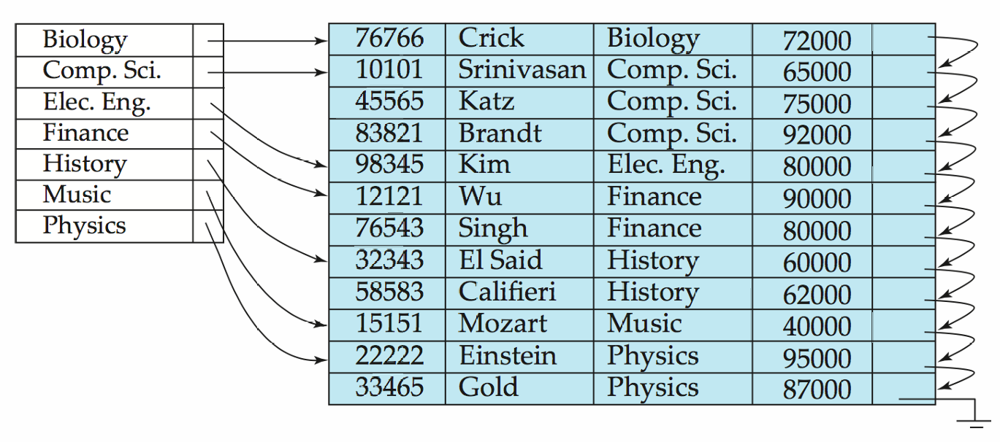
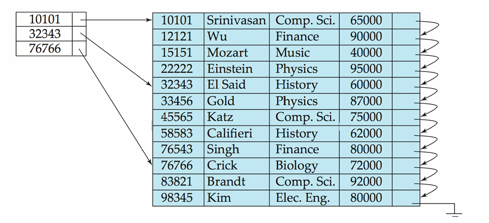
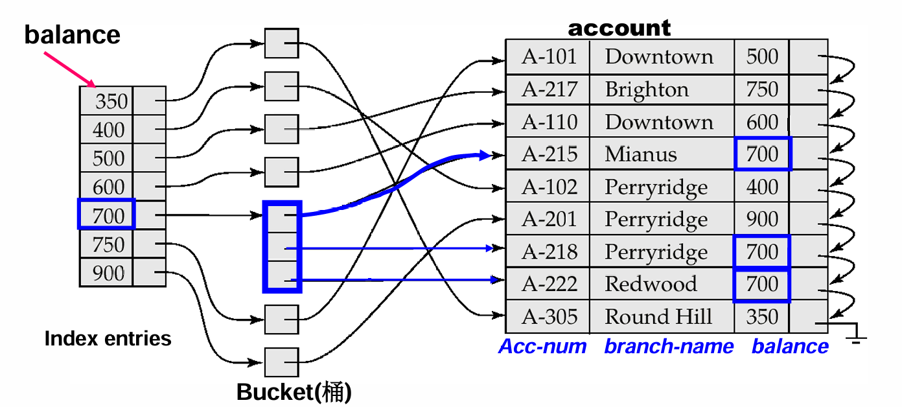
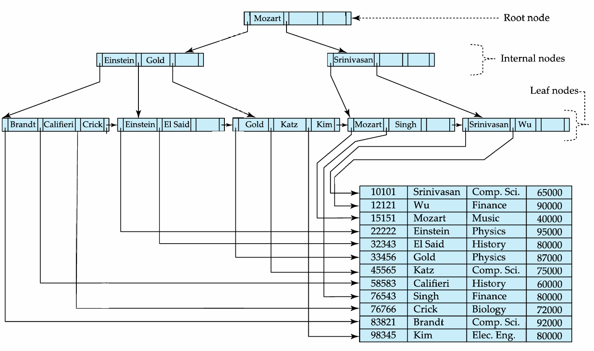
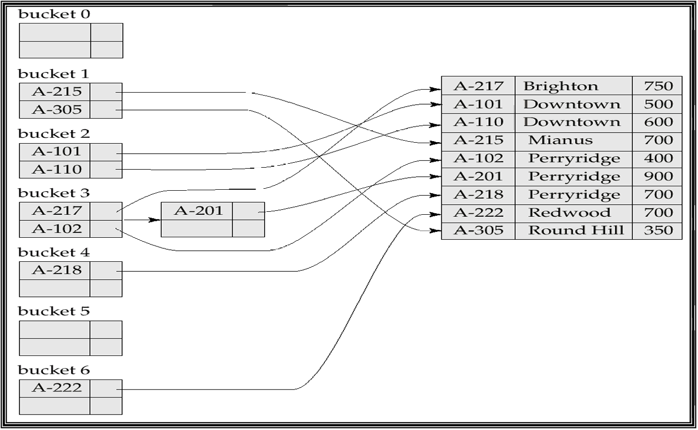
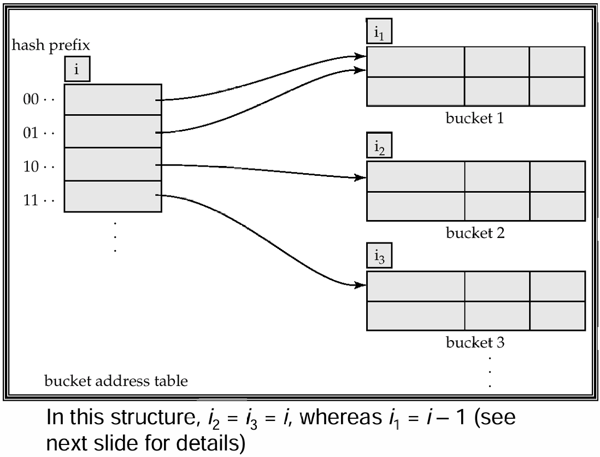
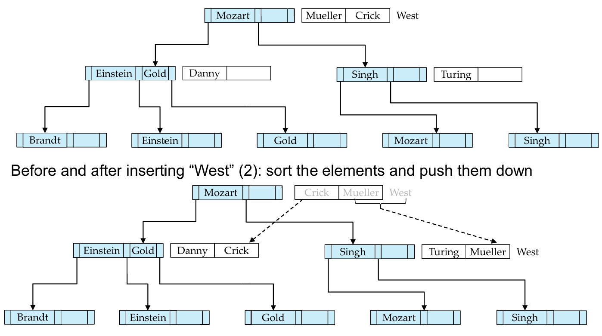
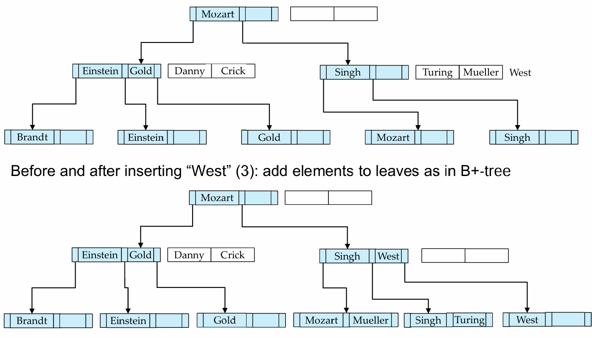
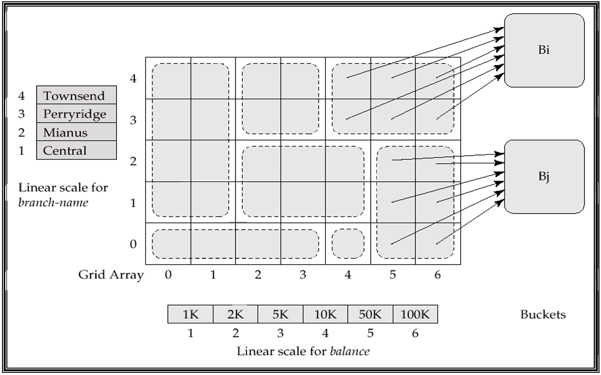
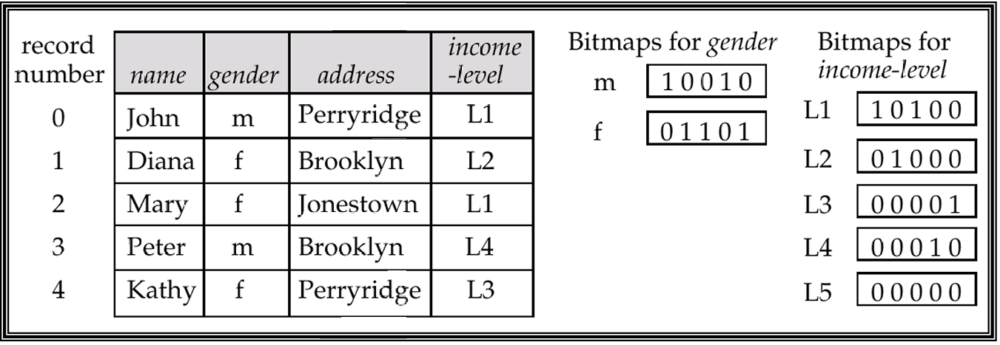

lec08 Indexing and Hashing
在上一章中，我们讨论了数据库如何把数据存到磁盘块、文件和缓冲区中。这一章继续往下走：既然数据已经被放进文件，那么我们如何快速找到想要的记录？
如果没有索引，查询往往只能扫描整个文件。索引（Index）的作用就是为查询建立一条“捷径”，让系统可以根据某个属性值快速定位记录。它和图书馆里的作者目录很像：目录本身比书小得多，但能告诉我们目标书在哪里。
Basic Concepts¶
索引机制用于加速对目标数据的访问。索引建立在一个或多个属性上，这些属性称为搜索码（Search Key）。注意，search key 不一定是候选键或主键，它只是用来查找记录的属性集合。
一个索引文件由许多索引项组成，每个索引项通常具有如下形式：
其中 pointer 指向数据记录，或者指向包含多个记录指针的 bucket。
Note
索引文件通常比原始数据文件小得多，因此先查索引、再根据指针访问数据，往往比直接扫描数据文件更快。
索引主要有两类：
- Ordered Index：索引项按照 search key 排序；
- Hash Index：通过哈希函数把 search key 分散到 bucket 中。
Evaluation Metrics¶
评价一个索引结构时，需要考虑：
| 指标 | 含义 |
|---|---|
| Access type | 支持等值查询、范围查询等访问方式的能力 |
| Access time | 查找记录所需时间 |
| Insertion time | 插入记录和维护索引的代价 |
| Deletion time | 删除记录和维护索引的代价 |
| Space overhead | 索引额外占用的空间 |
Tip
Hash index 很适合 where A = v 这样的等值查询，但不适合 between 这样的范围查询。Ordered index 对范围查询更友好。
Ordered Indices¶
在顺序索引中，索引项按照 search key 的值排序。它的典型使用场景是：数据文件本身按照某个 search key 排序，然后在其上建立索引。
Primary and Secondary Index¶
如果数据文件本身按照某个 search key 排序，并且索引也使用同一个 search key，那么这个索引称为主索引（Primary Index），也叫聚集索引（Clustering Index）。
Note
主索引的 search key 通常是主键，但不一定必须是主键。这里的 primary 指的是“和数据文件物理顺序一致”，不是 SQL 里的 primary key。
如果索引的 search key 和数据文件的排序属性不同，那么它就是辅助索引（Secondary Index），也叫非聚集索引（Non-clustering Index）。
例如，account 文件按 account-number 排序，但我们经常按 balance 查询账户，那么可以在 balance 上建立辅助索引。
Dense Index¶
稠密索引（Dense Index）为文件中的每一个 search-key 值都建立索引项。
如果一个 search-key 值对应多条记录，则索引项可以指向一个 bucket，bucket 中保存所有对应记录的指针。
Dense Index Files

稠密索引查找快，但空间开销和维护代价更大。插入、删除数据时，索引也需要同步更新。
Sparse Index¶
稀疏索引（Sparse Index）只为部分 search-key 值建立索引项，通常每个数据块建立一个索引项，索引项对应这个块中的最小 search-key 值。
查找 search-key 为 \(K\) 的记录时：
- 在索引中找到小于等于 \(K\) 的最大 search-key；
- 根据该索引项指向的数据块开始顺序扫描。
稀疏索引的优点是空间小、维护成本低；缺点是定位记录通常比稠密索引慢。
Warning
Sparse index 只能用于按照 search key 顺序排列的数据文件；dense index 则可以用于顺序文件和非顺序文件。
Sparse Index Files

Secondary Index¶
辅助索引通常必须是稠密的。原因是数据文件并不按照辅助索引的 search key 排序，所以不能只记录每个块的起始 key。
如果一个 search-key 值对应多条记录，辅助索引项通常指向 bucket：
Secondary Index on Balance

Multilevel Index¶
当索引文件本身太大，无法放入内存时，访问索引也会变贵。此时可以把索引文件看成一个顺序文件，再在它上面建立一层稀疏索引，这就形成了多级索引。
- Inner index：底层索引，直接指向数据文件；
- Outer index：建立在 inner index 上的稀疏索引；
- 如果 outer index 仍然太大，还可以继续建立更高层索引。
Example
假设有 1,000,000 条记录，每块 10 条记录，则有 100,000 个数据块。若稀疏索引每块 100 个索引项，则索引文件有 1000 个块。对这 1000 个块做二分查找，大约需要 9 次块读取。多级索引的意义就是继续减少这些索引块访问。
Index Update¶
索引带来查询收益，也带来更新开销。数据文件插入或删除记录时，所有相关索引都要维护。
对稠密索引，如果被删记录是该 search-key 的唯一记录，则删除对应索引项；如果不是唯一记录，则删除对应指针，或者更新指向第一条记录的指针。
对稀疏索引，如果被删记录没有出现在索引中，索引无需变化；如果它正是某个索引项代表的记录，则要用下一个 search-key 替换，或者直接删除该索引项。
对稠密索引，如果 search-key 原本不存在，就新增索引项；如果已存在，则增加指针或不变。
对稀疏索引，如果插入导致产生新块，需要为新块插入索引项；如果新记录成为所在块最小 search-key，则更新该块的索引项。
B+-Tree Index Files¶
B+ 树索引是 indexed-sequential file 的一种重要替代。普通索引顺序文件随着插入和删除会产生大量 overflow block，性能逐渐下降，需要周期性重组。而 B+ 树可以通过局部调整来保持平衡，不需要频繁重组整个文件。
为什么 B+ 树重要
B+ 树是数据库索引里最核心的数据结构之一。它不是为了在内存中打败红黑树，而是为了在磁盘上减少 I/O。它的节点通常对应一个磁盘块，因此高扇出、低高度特别关键。
Properties of B+-Tree¶
一棵 B+ 树是一棵有根平衡树，满足：
- 从根到所有叶子的路径长度相同；
- 非根、非叶节点有 \(\lceil n/2\rceil\) 到 \(n\) 个孩子；
- 叶节点有 \(\lceil(n-1)/2\rceil\) 到 \(n-1\) 个 search-key 值；
- 如果根不是叶子，则至少有两个孩子；
- 如果根本身是叶子，则可以有 \(0\) 到 \(n-1\) 个值。
Example of B+-Tree

Node Structure¶
B+ 树节点通常形如：
其中：
- \(K_i\) 是 search-key；
- \(P_i\) 是指针；
- 非叶节点的指针指向子节点；
- 叶节点的指针指向记录或 bucket；
- 通常一个节点对应一个磁盘块。
在叶节点中，所有 search-key 都实际出现；而非叶节点构成对叶节点的多级稀疏索引。叶节点还通过最后一个指针按 search-key 顺序串起来，方便范围查询和顺序扫描。
Query on B+-Tree¶
查找 search-key 值 \(V\) 的基本过程：
- 从根节点开始；
- 在当前非叶节点中找到应进入的指针区间；
- 沿指针向下，直到叶节点；
- 在叶节点中查找 \(V\)；
- 若存在，则根据指针访问记录；否则说明记录不存在。
如果文件中有 \(K\) 个 search-key，B+ 树高度大约是：
由于 \(n\) 通常很大，比如一个 4KB 节点可能容纳约 100 个索引项，所以 B+ 树高度通常很小。课件给出的例子中，100 万个 search-key、\(n=100\) 时，最多访问约 4 个节点。
Tip
这就是 B+ 树适合磁盘的原因：它不追求二叉，而追求“矮胖”。树越矮，磁盘 I/O 越少。
Handling Duplicates¶
如果 search-key 不唯一，可以用几种方法处理：
- 在叶节点中让 key 指向 bucket；
- 每个 key 后保存一个 tuple pointer list；
- 给 search-key 加上 record identifier，使其变成唯一键。
实际系统中，给 search-key 添加 record-id 是常见方法。它会增加存储开销，但插入和删除逻辑更简单。
Insertion¶
B+ 树插入的基本过程：
- 找到 search-key 应该出现的叶节点；
- 如果 key 已存在，则插入记录并更新 bucket 或 pointer list；
- 如果 key 不存在，尝试把
(key, pointer)插入叶节点； - 如果叶节点已满，则分裂叶节点；
- 将新节点的最小 key 插入父节点；
- 如果父节点也满，则继续向上分裂；
- 如果根分裂，则树高增加 1。
叶节点分裂时，把包含新插入项在内的 \(n\) 个 (key, pointer) 按序排列，前 \(\lceil n/2\rceil\) 个放原节点，剩余放新节点。
Deletion¶
B+ 树删除的基本过程：
- 找到并删除主文件中的记录；
- 如果使用 bucket，也从 bucket 中删除对应指针；
- 如果某个 leaf entry 不再需要，则从叶节点删除；
- 如果节点低于最小占用，尝试和兄弟节点合并；
- 如果不能合并，则向兄弟节点借 entry 并重新分配；
- 必要时向上递归更新父节点；
- 如果根节点只剩一个孩子，则删除根，孩子成为新根。
B-Tree Index Files¶
B 树和 B+ 树相似，但 B 树中 search-key 只出现一次，非叶节点中的 search-key 不会再出现在叶节点中。因此非叶节点除了子指针外，还要保存指向记录或 bucket 的指针。
它的优点是：
- 可能比对应 B+ 树使用更少节点；
- 有时不需要到叶节点就能找到目标 key。
但缺点更明显：
- 大多数 key 仍然需要走到较低层；
- 非叶节点更大，导致扇出降低，树可能更深；
- 插入删除更复杂；
- 实现难度更高。
因此，数据库系统中通常更偏好 B+ 树。
Static Hashing¶
哈希文件组织通过哈希函数直接根据 search-key 找到 bucket。
设 \(K\) 是所有 search-key 值集合，\(B\) 是 bucket 地址集合，哈希函数：
将 search-key 映射到对应 bucket。
Bucket 通常是一个磁盘块，里面可以存放一个或多个记录。由于不同 search-key 可能映射到同一个 bucket，因此 bucket 内仍然需要顺序查找。
Hash Functions¶
一个糟糕的哈希函数可能把所有 key 都映射到同一个 bucket，这样查找退化成线性扫描。理想哈希函数应该尽量均匀，使记录平均分布到各个 bucket。
实际哈希函数通常对 search-key 的内部二进制表示做计算。例如，对字符串，可以把各字符的二进制表示相加后对 bucket 数取模。
Bucket Overflow¶
Bucket overflow 可能由两类原因导致：
- bucket 数量不足；
- 数据分布倾斜，比如大量记录拥有相同 search-key，或者哈希函数不均匀。
overflow 无法完全避免，通常用 overflow bucket 处理。给定 bucket 的 overflow bucket 通过链表连接，这称为 overflow chaining。
Warning
课件中称这种使用 overflow bucket 的方式为 closed hashing。另一种 open hashing 不使用 overflow bucket，但并不适合数据库应用。
Hash Index¶
哈希不仅可以作为文件组织方式，也可以作为索引结构。Hash index 把 search-key 和对应记录指针组织成哈希文件。
严格来说，hash index 总是辅助索引。如果数据文件本身已经按同一个 search-key 做哈希组织，就不需要再额外建立相同 search-key 的主哈希索引。
Example of Hash Index

Deficiencies of Static Hashing¶
静态哈希的问题在于 bucket 数固定：
- 数据增长时，overflow bucket 变多，性能下降；
- 如果提前按未来规模分配 bucket，初期会浪费大量空间；
- 数据缩小时，空间也会浪费；
- 重新组织文件并选择新哈希函数代价很高。
因此实际系统常常需要动态哈希。
Dynamic Hashing¶
动态哈希适合会增长和缩小的数据库。它允许 hash function 的使用方式动态变化，而不是固定映射到一组 bucket。
Extendable Hashing¶
可扩展哈希（Extendable Hashing）是动态哈希的一种形式。它的思想是：
- 哈希函数生成一个很大范围的值，通常是 \(b\) 位整数；
- 当前只使用哈希值的前 \(i\) 位作为 bucket address table 的下标；
- bucket address table 大小为 \(2^i\)；
- \(i\) 会随着数据库增长和缩小而变化；
- 多个 table entry 可以指向同一个 bucket；
- 每个 bucket 自己也保存一个局部深度 \(i_j\)。
查找 search-key \(K_j\)：
- 计算 \(h(K_j)=X\)；
- 取 \(X\) 前 \(i\) 位；
- 在 bucket address table 中找到 bucket 指针；
- 在 bucket 中查找记录。
General Extendable Hash Structure

插入时，如果目标 bucket 未满，直接插入。如果满了，则分裂 bucket：
说明 bucket address table 中有多个 entry 指向该 bucket。此时新建 bucket，把局部深度加 1，并让一半 table entry 指向新 bucket，然后重新分布原 bucket 中的记录。
说明当前 table 不够区分该 bucket。此时先把全局深度 \(i\) 加 1，bucket address table 翻倍，再按上面的情况分裂 bucket。
删除时，如果 bucket 为空，可以删除 bucket，并在可能时和 buddy bucket 合并。缩小 bucket address table 也可以做，但代价较高，通常只有 bucket 数远小于 table size 时才考虑。
Ordered Indexing vs Hashing¶
Ordered index 和 hash index 没有绝对优劣，取决于查询类型和更新模式。
| 场景 | 更适合 |
|---|---|
等值查询 A = v |
Hash index |
范围查询 A between x and y |
Ordered index |
| 顺序扫描 | Ordered index |
| 数据增长频繁 | B+ tree 或 dynamic hashing |
| 平均访问时间优先 | Hashing 可能更好 |
| 最坏情况可控性 | Ordered index 更稳 |
Tip
如果系统中范围查询很多，B+ 树通常是更稳妥的默认选择。这也是它在数据库中存在感极强的原因。
Write-Optimized Indices¶
传统 B+ 树对查询很友好，但频繁插入时可能产生大量随机 I/O。写优化索引的目标是把小的随机写变成较大的顺序写。
LSM Tree¶
LSM Tree（Log Structured Merge Tree）的基本思想是：
- 新记录先插入内存中的 \(L_0\) tree；
- 当 \(L_0\) 满了，将其批量写入磁盘，构造或合并到 \(L_1\) tree；
- 当 \(L_1\) 超过阈值，再合并到 \(L_2\)；
- 依此类推。
其优点是：
- 插入主要使用顺序 I/O；
- 叶子节点填充率高，空间浪费少；
- 每条插入记录的 I/O 成本比普通 B+ 树低。
缺点是：
- 查询需要查多个 level；
- 合并时数据可能被多次复制；
- 删除需要用特殊 delete entry 表示。
LSM Tree 及其变体广泛用于写入密集型系统，比如 BigTable、Cassandra、LevelDB、MyRocks 等。
Buffer Tree¶
Buffer Tree 是另一种写优化索引。它的核心想法是：在 B+ 树的每个内部节点上放一个 buffer，用来暂存插入操作。
插入时，记录先进入较高层节点的 buffer。当 buffer 满时，再把其中记录排序并批量推送到下一层。这样每次向下移动的是一批记录，摊到每条记录上的 I/O 成本降低。
优点：
- 查询开销比 LSM Tree 小；
- 可以用于多种树索引结构；
- 可用于 PostgreSQL 的 GiST 索引。
缺点是：相比 LSM Tree，Buffer Tree 会有更多随机 I/O。
Buffer Tree Insertion


Index Definition in SQL¶
SQL 中可以用 create index 创建索引：
例如：
create index b-index on branch(branch-name);
create index cust-strt-city-index
on customer(customer-city, customer-street);
如果需要间接指定 search key 是候选键，可以使用：
删除索引：
Note
如果 SQL 已经支持 unique 完整性约束，那么 create unique index 不一定是逻辑上必须的。但在很多系统中，唯一约束底层也会通过唯一索引实现。
Multiple-Key Access¶
现实查询往往不只涉及一个属性。例如：
如果只有单属性索引，可以有几种策略：
- 用
branch_name索引找到 Perryridge 的所有账户，再筛选balance = 1000； - 用
balance索引找到余额为 1000 的所有账户，再筛选 branch； - 分别用两个索引得到记录指针集合，再求交集。
Composite Index¶
如果建立组合 search-key 索引：
那么对于：
可以直接定位同时满足两个条件的记录。
它也能较好支持：
但对下面这种查询并不高效：
原因是组合索引的顺序很重要。前导属性上的范围条件可能导致后续属性无法被高效利用。
Grid Files¶
Grid File 用于加速多个 search-key 上的一般查询。它为每个 search-key 属性建立一个线性刻度，并用一个多维 grid array 指向 bucket。
查找时，根据每个属性的值定位 grid 中的单元格，再跟随指针找到 bucket。
Example Grid File for Account

Grid File 的问题是空间开销可能很高，而且如果刻度划分不好，会产生很多 overflow bucket。周期性重组可以改善分布，但代价也很高。
Bitmap Indices¶
Bitmap index 是一种适合多键查询的特殊索引，尤其适合取值种类较少的属性，比如 gender、state、income-level 等。
对于某个属性的每个取值，建立一个 bitmap。假设记录从 0 开始编号，那么 bitmap 中第 \(i\) 位为 1 表示第 \(i\) 条记录具有该取值。
例如：
这表示同时满足两个条件的记录只有对应 bit 为 1 的位置。
Bitmap index 的优点是：
- 对多属性条件可以直接做 bitwise AND / OR / NOT；
- bitmap 通常很小；
- CPU 可以一次处理 32 或 64 位，速度很快；
- 对统计满足条件的记录数量尤其高效。
但它更适合低基数属性。如果一个属性几乎每条记录都不同，bitmap 数量会非常大，优势就会下降。
Bitmap Indices

Summary¶
本章的主线可以总结为：
- 索引用更小的索引文件换取更快的数据定位；
- Ordered index 适合范围查询，Hash index 适合等值查询；
- Dense index 为每个 search-key 建项，Sparse index 只为部分 key 建项；
- 辅助索引通常必须是 dense index，并通过 bucket 处理重复 key；
- 多级索引把索引本身继续索引化，减少磁盘访问；
- B+ 树通过高扇出和平衡结构减少 I/O，是数据库最常用索引结构；
- B 树理论上减少 key 重复，但实现和性能权衡通常不如 B+ 树；
- 静态哈希简单但不适应文件大小变化；
- 可扩展哈希通过 bucket address table 和局部深度支持动态增长；
- LSM Tree 和 Buffer Tree 用批量写入思想优化写密集场景；
- 多键访问可以使用组合索引、Grid File 或 Bitmap Index。
这一章的核心
索引的本质是用额外空间和维护成本换查询速度。真正的设计问题不是“要不要索引”，而是：为哪些属性建索引、用什么索引结构、如何在查询速度、更新代价和空间开销之间平衡。